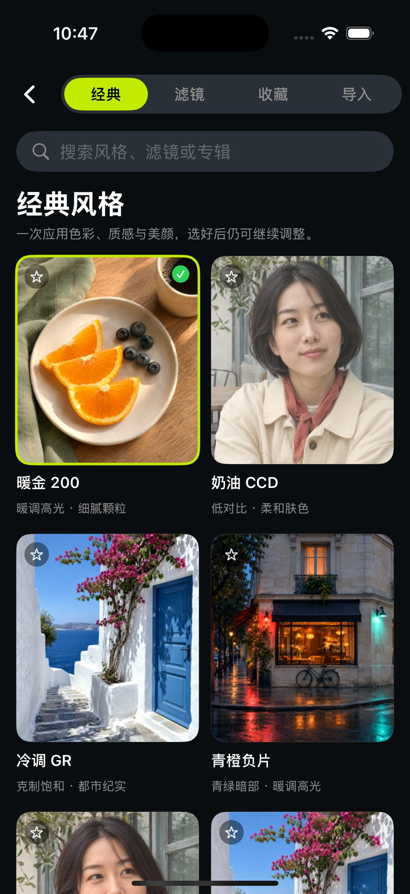

前后双摄，一起记录。
在支持的 iPhone 上同时使用前后摄像头，让风景和表情出现在同一张作品里。
PlusMe 1.1 · 为 iPhone 而做
前后双摄，把风景和表情一起留下。
拍摄照片、实况与视频，再用风格、编辑与换背景，继续完成你的作品。
点击截图可查看完整大图 · 示例取景素材为 AI 生成 · 双摄需设备支持
一张画面，两种视角
不必在记录风景和记录自己之间来回切换。
前后摄像头同时拍摄，把眼前和你的反应，一起留下。
在支持的 iPhone 上同时使用前后摄像头，让风景和表情出现在同一张作品里。
交换主副画面，拖动小窗位置、调整大小。让构图跟着这一刻的想法走。
拍摄照片、带声音的实况和视频。保存到系统相册，或用系统分享发给在意的人。

把风格，交给你的手
在按下快门之前，先找到喜欢的感觉。22 款授权胶片与电影色彩滤镜，搭配经典相机风格、调色与美颜，在取景时找到喜欢的感觉。
风格均可免费使用，无会员或内购。
PlusMe 1.1 · 拍完，创作还没结束
拍摄之外，照片与视频还可以继续表达。
照片编辑
从作品预览进入编辑，重新选择滤镜、调色和美颜，裁剪、旋转，或加上边框与水印。保存为独立作品，保留原作品。
人物与背景
提取人物透明主体，或选择自己的照片、视频作为新背景。调整人物边缘柔化、去白边与背景模糊，保存新的照片或视频作品。
换背景在拍后编辑中进行，不是实时取景换背景。
电影宽幕支持 60/120fps 单摄录像。需先关闭双摄，可用规格取决于机型、镜头、光线与设备温度。
通过桌面小组件、Siri 或快捷指令打开相机。iOS 18 及以上还支持锁屏和控制中心快速拍摄。
收藏喜欢的风格，查看最近使用，也能导入自己的 LUT。照片可多选后统一套用经典相机风格，另存为新作品。
你的日常，只属于你
无需注册，没有广告。使用统计由你选择开启。
拍摄与影像处理在设备本地完成，不自动上传你的作品。
不用创建账号。打开 PlusMe，就能把注意力留给眼前的人和风景。
照片、视频和录音不会自动发给开发者。只有你主动分享，作品才会离开设备。
定位默认关闭。主动开启后，才为后续作品记录拍摄地点，随时可以关闭。
PlusMe iPhone 版 · 免费
在 App Store 下载1.1 现已上线 · 无内购、订阅或广告
需要 iOS 16 或更新版本及 A12 或更新芯片的 iPhone。
双摄功能取决于设备支持情况；iPhone XS、XS Max 和 XR 使用单摄模式。
需要 iOS 16 或更新版本以及 A12 或更新芯片的 iPhone。前后双摄取决于设备能力，iPhone XS、XS Max 和 XR 使用单摄模式。持续录制时，帧率和可用规格会受到设备温度、剩余空间与系统压力影响。
在相机顶栏切换双摄；点击取景画面的小窗按钮交换主副画面，拖动小窗调整位置。点击风格入口打开经典相机、滤镜、收藏或导入；也可继续调色和美颜；在底部切换照片或视频；在照片模式下，点击取景画面左上角的 LIVE 开启或关闭实况。
请在“设置 → App → PlusMe”中检查相机、麦克风和照片权限，并确认设备有足够存储空间。未允许麦克风时视频没有声音；无法存入相册的作品会保留在 App 中，可稍后重试。请先保存重要作品，再卸载 App。
定位默认关闭。点击顶栏定位图标开启并授权后，后续作品可带拍摄地点。你可以随时关闭或在系统设置中撤销权限。分享原始作品时，位置元数据也可能一并分享。
请通过上述邮箱提供机型、iOS 版本、App 版本和重现步骤。不要发送不希望披露的照片、视频或位置信息。性能日志不会自动上传，仅在你主动分享时发送给你选择的接收方。
生效及更新日期：2026 年 11 月 19 日
拍摄设置、App 内作品副本、未保存成功的作品及排查问题用的性能日志保存在本机。App 无需账号。照片、视频、录音、拍摄位置和性能日志仅在设备上处理，主动分享时才发送给你选定的接收方。
只有在你主动使用系统分享功能时，所选作品或日志才会发送给你选择的接收方。作品可能包含位置等元数据，请在分享前检查。系统相册可能根据你在 iPhone 上的独立设置同步到 iCloud，相关处理受 Apple 的隐私政策和你的系统设置约束。
PlusMe 使用友盟移动统计 SDK，服务由友盟同欣（北京）科技有限公司运营。你同意使用统计并授予 iOS 跟踪权限后才初始化 SDK。统计所用数据包括设备标识（如 IDFV 和系统许可的 IDFA）、设备和应用版本、网络信息以及启动和会话记录，用于计算启动次数、活跃和使用时长。你可以在「关于与隐私」或 iOS 设置中撤回授权。详见 友盟隐私政策。
当你打开技术支持或隐私政策链接时，系统浏览器会连接 GitHub Pages 托管的静态网页。网页托管方可能接收提供网页所必需的网络信息，例如 IP 地址；PlusMe 不在链接中附带你的作品、位置或设置，网页没有广告或统计脚本。若你主动发邮件，我们仅使用你提供的信息回复和处理问题，请避免发送不必要的个人信息。
你可以在系统设置中随时撤销权限。卸载 App 会删除 App 容器内的数据；已存入系统相册的作品需在“照片”App 中管理。对隐私政策有疑问，请联系 laigangwei@163.com。如政策发生变更，我们会更新本页日期与说明。
PlusMe is a free iPhone camera for photos, Live Photos and video, with front/rear dual capture on supported devices. Requires iOS 16 or later and an A12 or newer chip. iPhone XS, XS Max and XR use single-camera mode. Contact laigangwei@163.com for help.
Photos, video, audio, settings, optional capture location and diagnostic logs are processed or stored on your device. Usage statistics are optional. PlusMe requires no account and displays no advertisements. Camera, microphone and photo-library permissions support capture, recording and saving; photo-library reading is requested only to delete recently saved captures. Location is off by default and is requested only when you enable geotagging.
Capture data and diagnostic logs stay on your device until you initiate sharing using system controls. Shared media may contain location metadata. Your own iCloud Photos settings may sync saved media through Apple. Opening support or privacy links connects your browser to a static GitHub Pages website; the hosting provider may receive the network information needed to serve it. The app does not attach your media, location or settings to these links. This page has no analytics scripts. Information you voluntarily send by email is used to respond to your request.
Optional usage statistics use the Umeng Mobile Analytics SDK, operated by Umeng Tongxin (Beijing) Technology Co., Ltd. The SDK starts after you opt in and grant iOS tracking permission. Device identifiers (such as IDFV and system-authorized IDFA), device and app versions, network information, launches and session records are processed to measure launches, active use and usage time. You can withdraw consent in About & Privacy or in iOS Settings. See the Umeng Privacy Policy.
Permissions can be revoked in iOS Settings. Uninstalling removes data inside the app; saved photo-library media must be managed separately. Developer: Zhengzhou Dengzi Network Technology Co., Ltd. Privacy questions: laigangwei@163.com.